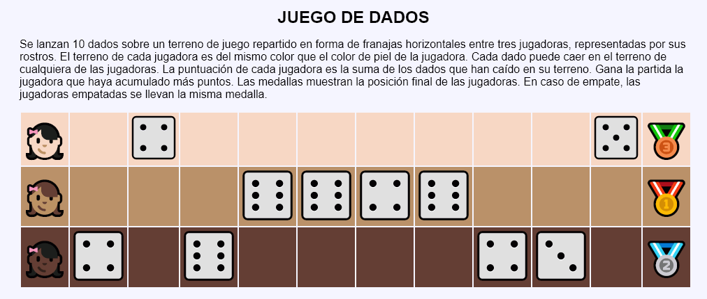
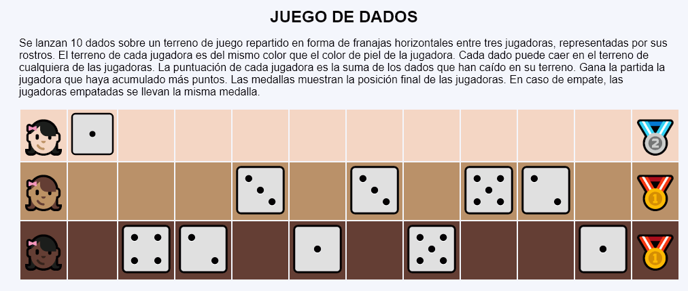
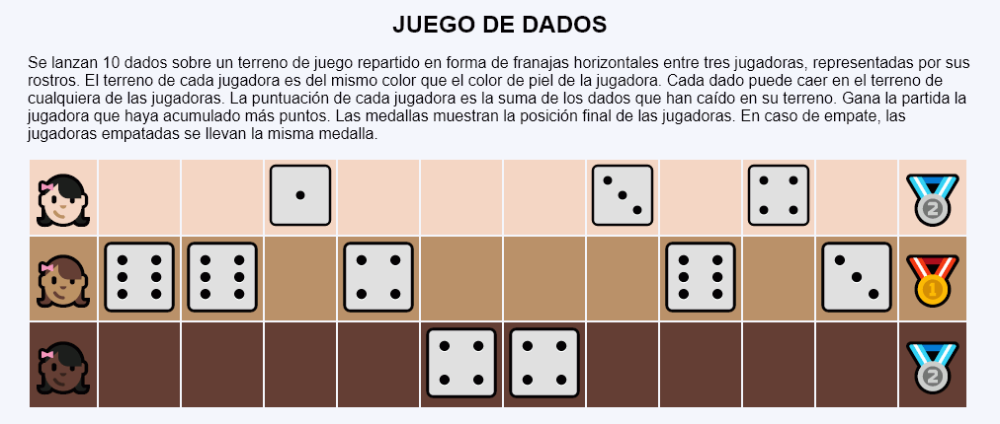

En este ejercicio se debe crear un programa que simule una partida de un juego de dados de tres jugadores. El juego consiste en lanzar 10 dados sobre un terreno de juego repartido en forma de franajas horizontales entre las tres jugadoras. El terreno de cada jugadora es del mismo color que el color de piel de la jugadora. Cada dado puede caer en el terreno de cualquiera de las jugadoras. La puntuación de cada jugadora es la suma de los dados que han caído en su terreno. Gana la partida la jugadora que haya acumulado más puntos. Las medallas muestran la posición final de las jugadoras. En caso de empate, las jugadoras empatadas se llevan la misma medalla.



<table style="text-align: center">
<tr style="background-color: hwb(22 77% 3%)">
<td style="font-size: 3rem">👧🏻</td>
<td></td>
<td><img src="img/dados/1.svg" alt="1" width="70" height="70"></td>
...
<td></td>
<td style="font-size: 3rem">🥇</td>
</tr>
<tr style="background-color: hwb(30 41% 27%)">
<td style="font-size: 3rem">👧🏽</td>
<td></td>
<td></td>
..
<td></td>
<td style="font-size: 3rem">🥈</td>
</tr>
<tr style="background-color: hwb(16 19% 61%)">
<td style="font-size: 3rem">👧🏿</td>
<td><img src="img/dados/2.svg" alt="2" width="80" height="80"></td>
<td></td>
...
<td><img src="img/dados/5.svg" alt="5" width="80" height="80"></td>
<td style="font-size: 3rem">🥉</td>
</tr>
</table>